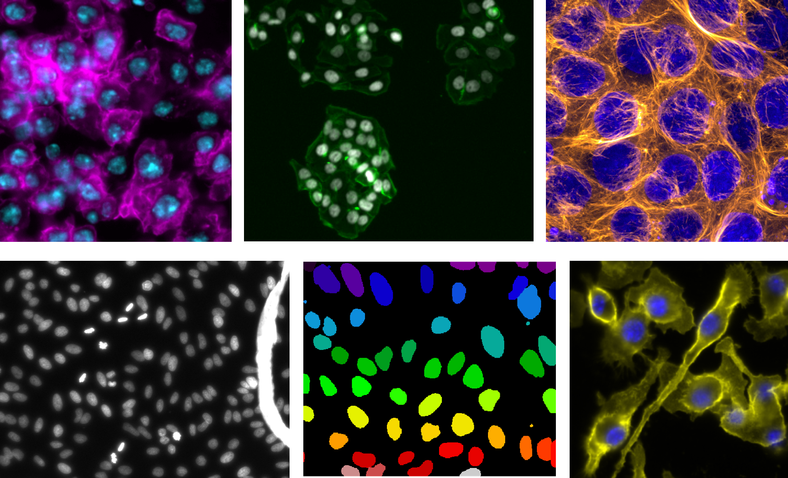

Uvítání#
Vítejte ve světě bilogických zobrazovacích metod a analýzy biologických obrazových dat! 🎉
{kind=link}

Obr. 1 Montage of fluorescence microscopy images from BBBC 1 (Broad Institute). Zobrazené snímky jsou z experimentů BBBC007, BBBC008, BBBC038, BBBC038, BB a BBBC020 (zleva doprava, shora dolů).#
Co od knihy čekat?#
Tato kniha je doprovodnou webovou stránkou k našemu dokumentu „A biologist’s guide to planning and performing quantitative bioimaging experiments“ 2 . Naším cílem je poskytnout doporučení a kurátorovanou sadu zdrojů pro biology, kteří chtějí porozumět faktorům, které ovlivňují jejich experimenty s fluorescenční mikroskopií.
Tato kniha je výsledkem společného úsilí odborníků v oblasti biologie, zobrazování, analýzy obrazu, správy dat, interpretace a prezentace dat. Naše tipy a doporučení pocházejí ze skutečných zkušeností a prací s biology, kteří jsou začátečníky v zobrazovacích metodách a analýze biologických obrazových dat. Když začínáte v novém oboru, často nevíte, co nevíte. V této knize se snažíme poskytnout kontext a tipy jak se vyhnout běžným začátečnickým chybám. Máme pro Vás i vybraný seznam kvalitních open source zdrojů (úplný seznam je k dispozici [zde] (bibliografie)). Ke značení jednotlivých typů zdrojů používáme tyto ikony:
Icon |
Resource type |
|---|---|
📖 |
Textbook (free online) |
📄 |
Scientific paper |
💻 |
Software or software notes |
🌐 |
Website |
🎓 |
Lecture notes or slides |
🎥 |
Video |
🔢 |
Math-heavy theory |
Co tato kniha není?#
Tato kniha nemá za cíl Vám poskytnout vyčerpávající seznam zdrojů, ale přehledného průvodce pro začátečníky. Pokud Vás zajímají zdroje zabývající se porblematikou více do hloubky, vřele doporučujeme tyto propracované materiály: zde 3 a [zde](https://www. bioimagingnorthamerica.org/training-education-resources/) a zde 4.
Tato kniha není protokolem ani průvodcem krok za krokem. Ačkoli některé zdroje, na které odkazujeme, takto mohou být koncipovány. Každá podsekce od přípravy vzorku po interpretaci dat jsou obsáhlá témata, která nelze do hloubky pokrýt v příručce pro začátečníky.
Jak používat tuto knihu:#
Začněte výběrem sekce pomocí navigačního panelu vlevo nebo začněte s přípravou vzorku kliknutím na tlačítko „Další“ níže ↘️.
Většina sekcí vás provede jednotlivými podtématy pomocí některých nebo všech z následujícího seznamu otázek:
Co je to?
Jaké mám možnosti?
Jak to udělám?
Kde se mohou věci pokazit?
Kde se mohu dozvědět více? (odkazy na zdroje)
Použité otázky a přesné formulace se mohou v jednotlivých oddílech lišit, ale doufáme, že tato struktura pomůže čtenářům lépe porozumět jednotlivým podtématům.
Co když můj zdroj nebo téma není zahrnuté?#
Neváhejte otevřít issue nebo pull request s přispěvkem! Doufáme, že to kniha bude živý dokument odrážející nejlepší postupy a dostupné zdroje.